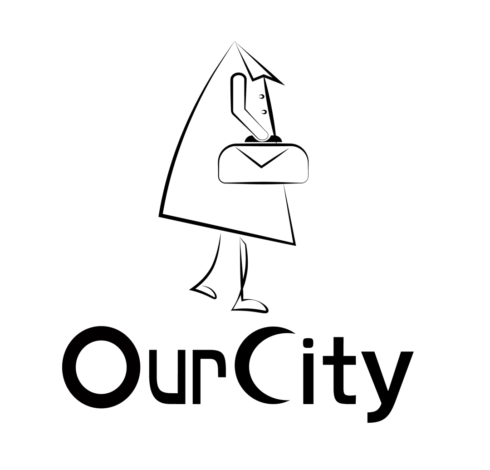
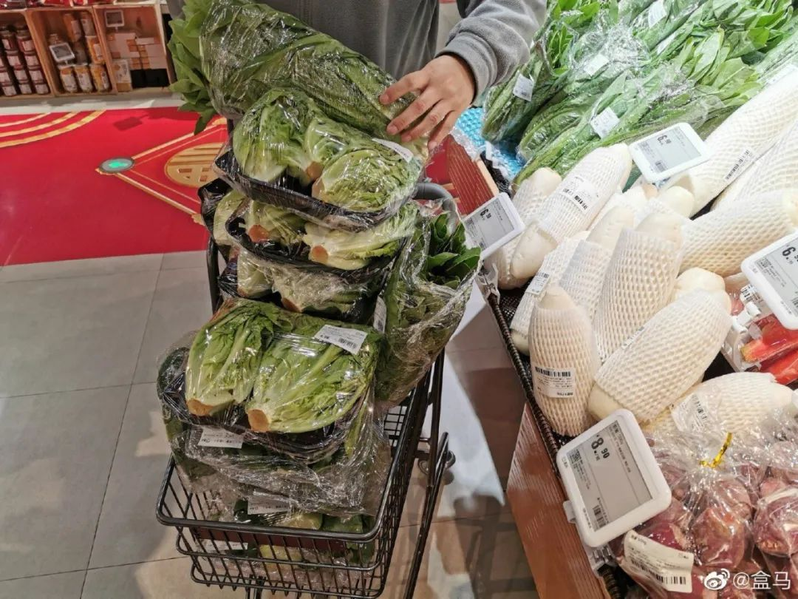
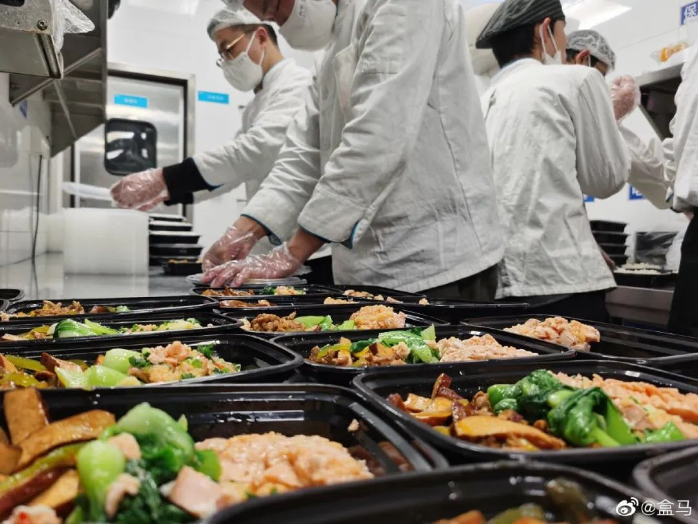

谁来守护武汉人的饭桌
原文链接 备份链接 文/刘雀 编辑/零柒 “都害怕，总得有人往前走一步。” 这是美团买菜武汉融桥站闵捷说的话，他所在站点的马路对面就是疫情定点医院。站点一个员工的咳嗽，就吓退了其他员工，“其实我心里也挺害怕的。我觉得不行，这个工作就摆在这 …


武汉封城已经过去一个月，突如其来的疫情打乱了整座城市的节奏，也在2020年开局给零售市场注入了新的变量。进入武汉不到两年，一共开了18家店的盒马在此期间仍然维持着正常运转。坚守武汉意味着经营层面各个环节都要接受挑战，接住它们对盒马在武汉市场，甚至布局全国都具有战略性的价值，而这背后是一系列人付出的努力。
作者｜朱若淼
来源 | 城市OurCity
（ID：varicity）
一个月前，陈为在凌晨2点多从手机上刷到了武汉市即将封城的消息。这位武汉盒马太和店的物流主管当即给所有还没返乡的仓库同事打去电话，劝说大家留下来。因为封城之后，门店里可有得忙了，后方仓库必须要同步跟上节奏。
6个多小时后，张国伟也得知了这个消息。那天早上，他如常乘公交车去店里上班。很快，这位武汉盒马龙岭店的营运副店就从情绪紧张的店员口中得知了封城的消息。
上午9点店里开门后，王胜觉得那天的货多到“根本送不过来”，提货点积压的商品大多是1个多小时前就需要交送到顾客手中的，这让他感到更加焦虑。王胜所在的盒马店配送范围覆盖了武汉大学等学校，但因寒假减少的校园订单没能缓解太多压力，家属区暴增的订单仍然让大家忙不过来。
这天是1月23日，武汉市新冠肺炎疫情防控指挥部在当天凌晨2点发布第1号通告，宣布上午10点关闭所有离汉通道。武汉在一夜之间几乎陷入停摆，仍然维持经营的零售店、外卖平台们作为城市的有机组成部分短时间内承担起了为市民供应物资的职责。盒马是这个组织体中的一部分。自23日起，它在武汉的所有18家门店均未打烊，每天为市民供应着日常必需品。
这是盒马自2018年4月入驻武汉以来，遇上最大的“考验”。由于武汉地区的疫情在过去一个月内反复波动，这对门店运营、仓储管理、配送模式等各个环节的响应速度提出了更高的要求，同时这也更需要一线员工充分发挥能动性，提出新的方案以应对不断变化的局势。
没人想过要停下来。这是个常住人口超过1100万，地处要塞的副省级城市，同时也是一座消费大城。武汉的社会消费品零售总额在2018年已经在全国排名第五。在连锁零售行业中，武汉具有至关重要的战略价值。对于盒马而言，武汉是一座必须守住的零售重镇。
OurCity
应急状态
张国伟在得知封城消息后，很快给室友发去消息，问要不要为家里囤些东西。这也是当时大多数武汉人第一时间做出的选择。大量人流涌进市内各大超市，以千元为单位囤积生活必需品。
与此同时，所有的零售门店都需要马上做出调整。按照惯例，此时各大超市正在为应对春节期间的消费高峰做准备。年三十到大年初二这个时间段内，大家很少会到店里采购米面油等储备性食品。疫情爆发之后，这类商品和消毒用品都成了热销品，人们瞬间改变的消费行为，需要盒马在武汉的门店们快速做出反应。

最要紧的一项是要确保到店人员的安全。为此林霞所在的盒马店调整了此前规划好的顾客动线。
封城之后，店里9台自助收银和1台人工收银机都已启用。根据新开的收银台位置，林霞他们利用围栏重新规划出顾客的排队路线，尽可能避免结账时人员扎堆。这是基于他们此前为年关准备好的预案做出的快速调整。
在此基础上，几名在林霞客户部的同事被增派到结账处，专门负责提醒顾客与他人隔开一个购物车的距离，并挪开餐饮区新增收银台周围的桌椅，以腾出更多的空间让大家拉开间距排队。这一方面能提高顾客在店内的购买效率，同时也最大限度地降低了交叉感染的风险。
在供应端，库房的商品供应结构也要跟上前场门店进行调整。此时，市民对病毒的恐慌情绪及对未知封城期限的不安全感，让大家席卷了所有超市的菜、肉专区。
23日上午9点门店开业后，陈为很快就注意到店门口排起的长队，于是他立刻决定把仓库里所有菜、肉等生鲜商品都摆进门店前场售卖，“开门后的两三个小时就被清空。”一些如速冻水饺这类方便食品成了抢手货，陈为和他的同事们只得一次次返回仓库补货。运到前场时，大家已经顾不得摆放整齐了，“当时都是直接把箱子搬到前场货架旁，为了方便顾客，我们把箱子打开让顾客自己拿，里面的东西5到10分钟就会被拿光。”
顾客对店内生鲜、食品需求量的暴增，让4000平米的仓库库容告急。原本专门为春节准备的酒水、礼盒此时成了滞销货，既卖不出去，又占库房空间。“当天运到仓库的蔬菜、水果、肉类等生鲜是我们店2018年开业以来从没有过的进货量。如果都堆在仓库，肯定装不下。”情急之下，陈为跟店长商量决定占用门店生鲜货架区三分之一的过道空间来堆放新到到的生鲜商品。这样一来仓库才释放出更多空间来接受从武汉大仓运来的方便食品。
源源不断发来陈为仓库的物资，背后是盒马整个供应链提供的支持。在封城前一天，盒马总部已经向采购、物流、仓库等各部门发出了调拨全国物资支援武汉的命令。在采购端，方便食品、口罩、消毒液等民生用品成为重点物资。

盒马总裁侯毅在24日这天公开表示供应武汉是盒马的第一优先。首批支援在封城26小时后，从上海仓库运达了盒马在武汉在东西湖区的城市大仓。当武汉市场供不应求时，盒马在上海的大仓可直接发货去武汉。与此同时，临近武汉的长沙和重庆两个大仓也同时积极备货，随时准备调货支援武汉。来自总公司的物流调度，让陈为到目前为止还没断货的顾虑。
在门店的保障上，盒马总部根据越来越严峻的事态，逐步升级了消毒程序。“待在家里可能不会比在店里上班更安全”是林霞跟同事们聊天时提到的共同感受。从20日起武汉的盒马门店每半个小时会对购物车、购物台等易接触的物品和区域进行消毒。随后，每两天一次的门店全面消杀被更新为每天一次。
从封城的第二天起，盒马总部就开始为武汉地区的店员提供每天每人2只口罩、免洗洗手液、便携式酒精喷雾等防护物资的供应。与此同时，早会中也新增了防护教学环节，教大家如何做店内消毒和自我消毒。充足的消毒用品发放，最大程度的缓解了店员们的焦虑。林霞觉得只要店员的情绪稳定了，进店的顾客才不至于恐慌。
OurCity
守住武汉
王胜是自愿回武汉支援的，原本他已在20日提前请假回到了咸宁老家，筹备即将在春节举办的婚礼了。但20日晚，新型冠状病毒能够人传人的消息被传出之后，王胜很快就收到了主管在群里发的动员消息。考虑到咸宁距离武汉只有不到100公里，他私信主管报了名，并在22日回到了武汉。
回来后，王胜发现整个城市的氛围变了。车站多了不少检测体温的工作人员，街面上大部分人都戴起了口罩。封城当天，公司虽然没有给他们下发“无接触配送”通知，但已有不少顾客接到送单电话后，让王胜把快递放在指定位置避免直接接触。
封城这一个月以来，越来越多的人藏在了家里，市民们对日常消耗品的购买需求源源不断涌入线上，王胜明显感受到的此时的配送压力比平时大了不少。
此时他们门店的配送团队不足平时的三分之一。封城的头两天，门店在线上井喷的订单需求，让本就人手紧张的团队承受着巨大的压力，为了尽可能满足配送需求，店里有五、六位同事把自己的车开出来，消过毒之后拉着大家去附近区域送货。
运力吃紧几乎也是当时武汉所有盒马门店都遇到的问题。部分盒马门店的主管、运营、拣货员们自愿加入配送队伍，有车的店员也跟王胜的同事们一样把后备箱捐了出来。这样的吃力感在王胜的记忆中持续了一天，封城第二天武汉的盒马店开始陆续实行配送预约制，这才让他慢慢感觉压力减轻了一些。
但配送员们很快又遇上了新的压力。1月26日武汉正式对中心城区实行机动车禁行管理，一些门店接到了一次需要多人同时配送的订单。陈为回忆，2月初他还在仓库就分拣到一个上千元的订单，“最后我们分出四个配送员去给他送货”。

为进一步解决人手紧张的问题，盒马在2月3日推出了“共享员工”的方案，接收受疫情影响而迟迟无法开工的餐饮店员工。这项措施目前也逐步开始在武汉施行，以缓解店员们的压力。
保障运力是到家业务的关键，也是重点支援的环节。不仅是盒马，同样坚守在武汉的家乐福近期也启动了“跨界共享员工”项目。苏宁从各部门抽调千余人，调派去家乐福支援，其中，各门店到家业务的拣、配环节是支援的重点。
在这个特殊时期盒马承接住这部分压力，并满足市民的需求，意味着它的品牌能在心理层面上与本地人建立更进一步的情感联系。这对于盒马争取这个长期以来被本地商超品牌把控的市场来说尤其重要。也因此，过去一个月更是盒马渗透入武汉市民社区消费生活的机遇期。
武汉对盒马的重要程度从它的门店数量就可见一斑，其在武汉的门店数仅次于上海、北京。
在连锁零售行业的版图中，武汉的战略价值体现在它的地理区位优势和本地的零售商业基础之上。由于它是中国内陆最大的水陆空交通枢纽，地处长江黄金水道与京广铁路交通大动脉的十字交会处。这让武汉成为物流仓配网络建设一个重要节点。所有希望吃下整个中国市场的零售商都绕不开这座城市。武汉更是一个充满着旺盛消费欲的城市。2018年它的社会消费品零售总额在全国城市中排名第五，超过深圳、成都和杭州。
在21世纪的第一个十年，武商集团、中百集团、中商及汉商集团四家本土公司打败了试图占领武汉的外资商超品牌，瓜分了武汉当地的零售市场。10年后，这个外资没有攻下的市场迎来了新的挑战者。近年来一直希望填补湖北这块市场空白的永辉，在7年前就展开了与中百集团的收购拉锯战。去年年底，这家背靠腾讯的商超品牌最终还是放弃了对中百的收购。到目前为止，中百集团仍是武汉开店数量最多的零售商。
从2018年盒马在武汉落地，并迅速覆盖武汉三镇的核心地区，成为这个区域市场上势头最猛的一个外地零售品牌。它在武汉的落地甚至还直接搅动了本地的零售市场。2018年盒马进入武汉后，中百集团更是加快了新零售的布局节奏，推出主打精品超市的中百生活剧场，并试水“餐饮+超市”模式的中百仓储绿标店，以应对盒马的竞争。
与此同时，盒马还源源不断地吸引着本地和周边的零售人才。张国伟就是在盒马入驻武汉半年多以后，从老家郑州的华润Ole’精品超市辞职来武汉盒马的。从2009年毕业在大润发开始工作算起，去年正好是他入行的第10年，代表新零售模式标杆的盒马是吸引他从传统商超体系跳槽过来的原因。“三十好几的人了，再不动就动不了了”。
换到盒马之后，张国伟感受到了公司快速的业务调整给自己工作带来的不舒适感。去年这家新零售公司刚好进入一个快速迭代期。张国伟因此赶上了盒马尝试盒马菜市等多业态布局深入社区的阶段。
这些因业务调整带来的不舒适感都让张国伟感到兴奋。每每聊起最近工作中遇到的问题，他总不自觉的会加快语速。比起之前已经熟练到麻木的传统超市业务，新零售模式带来的新鲜感让他觉得当初自己放弃年终奖，在年前跑来武汉盒马入职的选择没有错。
最近他时常复盘这段时期的工作，有些失误被他总结下来成为经验。前段时间店里由于订单峰值波动异常，导致顾客线上下单买的速冻水饺其实已经在门店里被卖光了，最后配送线上订单时才发现无货可发。“以后再碰上这类突发，我会更留意这类商品的库存盘点。”
张国伟与盒马建立起的联系已不仅仅停留在工作层面。张国伟至今记得，1月底公司向医院的医疗工作者陆续捐赠了5万斤车厘子，尽管他没有直接参与其中，但提起这件事时仍然能感受到他言语中的骄傲。带有人文关怀性质的举措在特殊时期建立起了他与公司的情感连接。这种连接既是对内的，也是对外的。

过去一个月，盒马除了自己的本职业务之外，从1月26日起，便借助自身的餐饮业务优势免费为武汉的各家医院免费提供早午晚餐，并为浙江卫计委支援武汉团队供应餐饮及水果。2月初，仍挂职阿里文娱战略委员会主席的高晓松促成了盒马与武汉动物园的需求对接，为后者送去700斤泥鳅、鲫鱼，填补了动物园的饲料短缺。
疫情过后，这些举措都会转化为盒马在武汉地区的能量，增加它与武汉本土零售企业竞争下去中的砝码。
OurCity
主动应对
封城一个月以来，由于受限于运力及不断调整的城市管控政策，盒马在更新应对策略中持续拓展着它在武汉的零售版图。
由于配送预约模式很难最大程度的满足周边居民的需求，张国伟所在的门店在2月初就开始尝试类似社区团购的模式。原来他们安排去各社区做品牌推广的营销专员全部被调整了工作任务，这些专员们转而成为各小区的“团长”。他们借助推广时在App端建立的盒粉群来收集社区订单，并将这些订单最终汇总回张国伟的龙岭店，第二天门店再统一安排专人送去整齐摆放在小区门口，等待顾客下楼自行提取。
在此基础上，盒马还获得了饿了么提供的站点支持。武汉市民通过饿了么购买到的盒马店商品，可以选择去饿了么的自提点里取货。随着武汉从2月10日开始对全市社区实行的封闭式管理，饿了么将自提站点的布局渗透进入社区，其自提点从封城开始时合作的便利店、水果店，延伸进入社区楼，目前这类社区自提服务点在武汉新增了11个。
受困于有限的人力，这种类似社区团购的站点式配送、自提模式能最大限度的节约运力。在武汉地区初步尝试社区团购之后，2月中旬盒马也正式启动了这种新模式的探索。
封城的这一整月，既是对盒马，也是对每一个坚守岗位的盒马店员的一场大考。他们每天不仅要在繁杂的工作中直面着这座城市里起伏波动的情绪，还要解决层出不穷的问题。
面对仍然未知的解封日期，盒马此前在日常经营中积累的组织经验，在这段特殊时期发挥起了作用。它调动起的员工主观能动性，让门店的运营体现出较好的弹性，来应对着每天随机出现的新状况。
林霞至今对一位打电话来求助的独居阿姨印象深刻。由于孩子在外地无法赶回武汉，阿姨不敢将自己买不到菜的担忧告诉子女，于是打通客服电话向盒马求助。“前两天她来我们店里采购了，但是怕打扰我们没有来打招呼。当时知道以后挺暖心的。”通过回访，林霞得知这位阿姨近期刚来过门店，并且就住在跟门店隔一条街的社区里。每隔一段时间，他们仍会电话回访这位阿姨。
这套回访机制就是她临时设计出来的。疫情爆发之后，店里的客服电话就没有断过。这些打来电话的顾客里有不会线上买东西的老年人，还有因为在线上抢不到单，或家里没有口罩不敢外出采购的人。
为了解决这部分顾客的需求，林霞跟店长讨论出了“特殊时期的特殊办法”，由客服记录这些顾客的订单，再派专门的配送员负责配送。另外，林霞还设计出一套回访流程。他们制作了一张Excel表记录下每一个来电顾客的联系方式，三天后再进行回访，跟进他们近期线上购买的情况和是否解决了买菜的问题。
“我们讲究把单子完结到最后一步。”林霞事后总结觉得，当初之所以能想出这套方法，跟盒马客服的工作原则是分不开的。
这与她此前在上任公司做客服的经验完全不同。在上一份工作中，她的主要工作只是收集意见，至于解决的情况和进度就不在她考量的范畴。到了盒马之后，她不仅要收集顾客意见，还要追踪问题解决的进度，“都是非常细节的事情。”小到顾客投诉炒饭太咸这样的事，她也需要到去档口跟对应的同事核实，并根据顾客反馈提出改进意见。林霞觉得平时这些细碎的工作积累，帮助到了她在这次突发状况中做出的应对，“我会多想几步，最后都是为顾客服务。”
这些天下班后，张国伟偶尔也会跟以前在传统商超认识的前同事讨论当下的应对，“传统商超对突发的响应速度会更慢些。”他估计按照传统商超的节奏，商品的采购调整和资源的统筹要等到大年初七才能重新对接上实际需求，“但是盒马是形势不对马上调整，我们的货基本上到初二、三的时候就协调到位了。”
张国伟分析盒马组织内部的灵活机制这次帮了不少忙。一方面总部原本就给了他这样的基层门店经营者更多的权限。封城当天为了稳住店员的情绪，他和店长临时决定将门店库存里现有的口罩、酒精拿出来分给员工做防护用。“如果在以前我工作的超市，光审批流程我就要等2到3天。”在盒马，这个申请可以事后再补。
店内人员紧张的时候，原先的团队结构被打散重组。门店前场缺人手时，后方行政部门的HR和后勤同事也被调来支援。这不是张国伟一家店的情况，武汉所有的盒马店都在第一时间做出了类似的调整。在陈为工作的门店仓库，工作稍微轻松些时，他便会派一部分同事去前场帮忙维持秩序。
武汉禁止机动车通行之后，政府提供的公交车早期无法满足所有零售工作者的需求。陈为的一名同事还主动承担起了接送早班收获组同事上下班的任务。收货组每天4点就要开始在仓库接收当天大仓运来的货品，这名同事每天早上3点就要开车出发，绕路去接上同组的5名同事来仓库上班。
对于这些工作在一线的盒马店员来说，职业的本能驱使他们坚持着迈过去了一个又一个的坎。“接到那些求助电话，心里真的不好受。”这些感性上的触动，让怀孕三个月的林霞在封城后仍然坚持着去上班，而忙碌的工作成为她寻找安全感的一种方式。
关于疫情本身，林霞、陈为们很少刻意关注。每天下班以后，陈为只会“稍微”看一会儿疫情新闻，其余大部分时间都留给综艺。最近他在追新一季的《吐槽大会》，“学学里面的毒舌，好回去吐槽同事。”陈为觉得正是因为大家现在身处武汉，所以对很多外界看来惊讶的事感到习以为常。
对于这个从配送员做起，一路升到门店物流主管的仙桃人来说，他如今更关心如何保证工作更高效的运转。“等这件事情过去，分公司肯定能更重视我们物流这块。”这是陈为此前认为武汉分公司一直需要提升的部分。
他观察，由于武汉地区的顾客更喜欢下了班到店里逛，线上下单上海盒马店比例少了不少，“用户习惯不一样”。经历了这一遭之后，他觉得会培养更多人线上下单，“希望未来武汉人也能习惯下班后，舒舒服服的直接从手机上逛盒马。”
疲惫感是最近一段时间，他从仓库同事身上感受到最大的一种情绪。疫情打乱了仓库原有的秩序，原本固定的休息时间被工作填满，“每个星期三是我们生鲜盘点的日子，上个周三我差点忘记了，还好及时完成。”长时间的工作和不再规律的休息日，容易让人对日期的感知变得模糊不清。过去一个月里，陈为会有意识的强制安排连续工作6天的同事回家休息1天。
科比去世的消息是过去这一个月里，唯二让陈为感到意外的消息。
1月27日那天，他们让烘焙部的主管给做了一个紫色小蛋糕，上面画着科比的球衣号码“24”。对于每天在仓库里做着重复工作的男孩子们来说，科比让大家突然有了讨论的性质，关于篮球的话题还在群里持续了2、3天，这在仓库里短暂地激起了大家这些天来少有的怀旧情绪。
应受访者要求林霞采用化名。
@城市OurCity原创内容 转载请联系授权
欢迎转发朋友圈


点击【下方图片】 了解更多精彩文章


原文链接 备份链接 文/刘雀 编辑/零柒 “都害怕，总得有人往前走一步。” 这是美团买菜武汉融桥站闵捷说的话，他所在站点的马路对面就是疫情定点医院。站点一个员工的咳嗽，就吓退了其他员工，“其实我心里也挺害怕的。我觉得不行，这个工作就摆在这 …
原文链接 备份链接 24.02.2020本文字数：3621，阅读时长大约6分钟 导读：封城武汉，不是孤城。 作者 | 第一财经 周芳 作为疫情始发地，一座千万人口级别大都市选择封城，这在新中国还是第一次。 但武汉封城为尽可能多地减少传染 …
原文链接 备份链接 2020年2月15日，因武汉封城，约有20人被滞留在武昌火车站地下停车场。中青报·中青网见习记者 李强/摄 本文约4040字 预计阅读时间11分钟 作者 | 尹海月 刘 言 王嘉兴 李 强 编辑 | 从玉华 封城前，出 …
原文链接 备份链接 *新京报记者 王昱倩 王瑞文 王洪春 王飞翔 实习生 王亚会 王泽勋 郭懿萌 编辑 李明 校对 翟永军* 导演程逸飞把纪录片的第一个画面留给了那条江。 一群赤条汉子吼几嗓子，挨个扎进江面。江边上，飘来熟悉的凤凰传奇的广 …
原文链接 备份链接 一个月前的今天，武汉宣布封锁整座城市，近千万人口就从这一天的上午十点起，被折叠在了围栏以内。 封城通告是在凌晨下发的，也就是说，距离正式生效其实是有大约八个小时的空白时间的，有人说这是枪口抬高一寸的暗示，似乎也有那么一 …